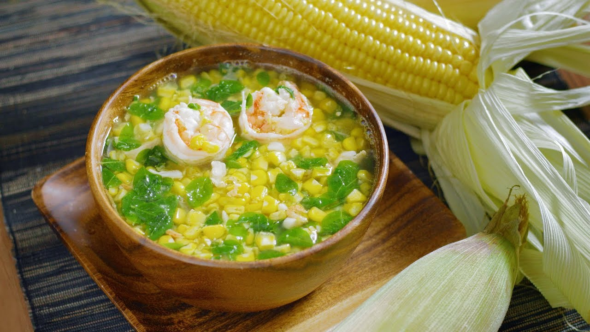

Suam na Mais

Description
Suam na Mais is a Filipino soup with fresh corn kernels, shrimp, and spinach. It's creamy, nutritious, and delicious as a main or a side dish.
Ingridients
- 4 native white corn (glutinous)
- 1 tablespoon canola oil
- 1 small onion, peeled and sliced thinly
- 2 cloves garlic, peeled and minced
- ½ pound small shrimp, peeled and deveined
- 1 tablespoon shrimp paste
- 6 cups water
- salt and pepper to taste
- 1 bunch spinach, stems trimmed
Instructions
- Shuck the corn cobs by removing the husks and silks. Using a sharp knife, cut the stem ends.
- In a large bowl, stand an ear of corn up and using a small knife, thinly cut the kernels off from top to bottom. Rotate the corn when done with each section to get to the next.
- In a small bowl, scrape the sides of the cobs using a spoon to extract the remaining pulp and milky juice.
- In a pot over medium heat, heat oil. Add onions and garlic and cook until softened.
- Add shrimp and cook, stirring occasionally, just until color changes.
- Add shrimp paste and continue to cook for about 1 to 2 minutes or until lightly browned.
- Add the cut corn and cook, stirring occasionally, for about 2 to 3 minutes or until corn turns translucent.
- Add water and bring to a boil, skimming scum that floats on top.
- Lower heat, cover, and simmer for about 7 to 10 minutes or until kernels are tender.
- Add scraped corn pulp and juice and stir to distribute. Continue to simmer for about 3 to 5 minutes until soup thickens.
- Season with salt and pepper to taste.
- Add spinach, pushing down the leaves into the broth. Turn off heat, cover, and allow the residual heat to cook the spinach just until wilted. Serve hot.
Home